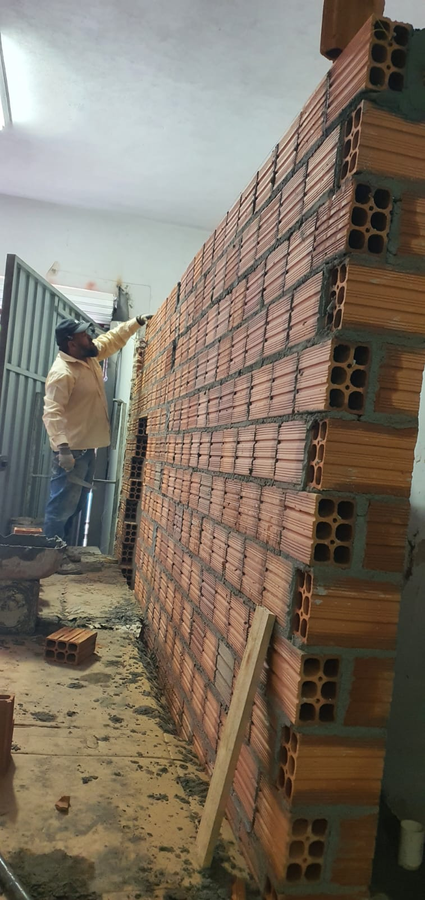
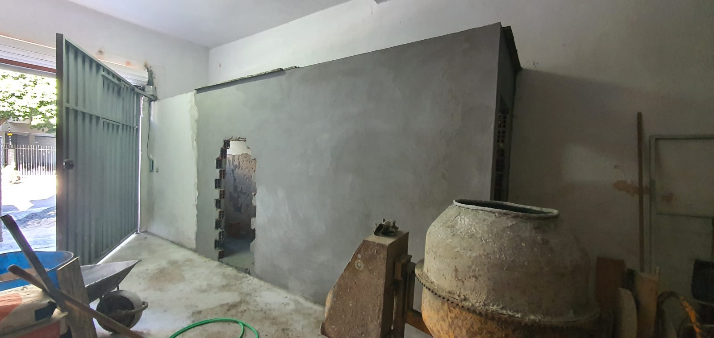
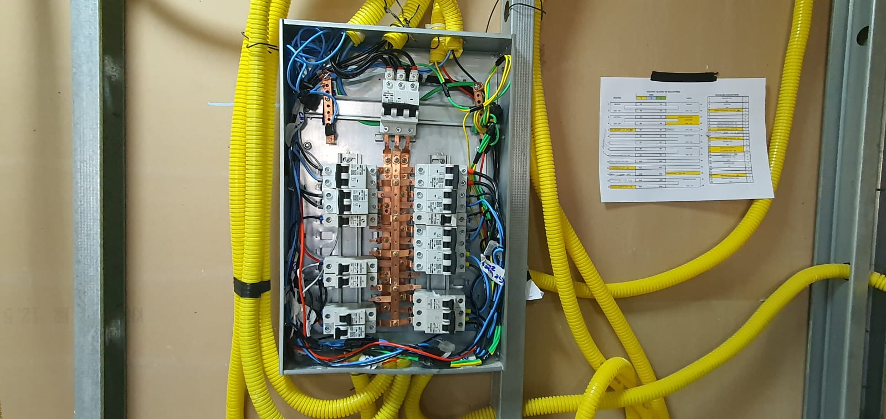
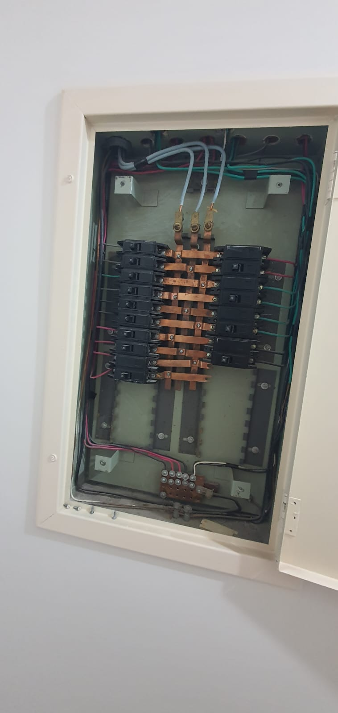
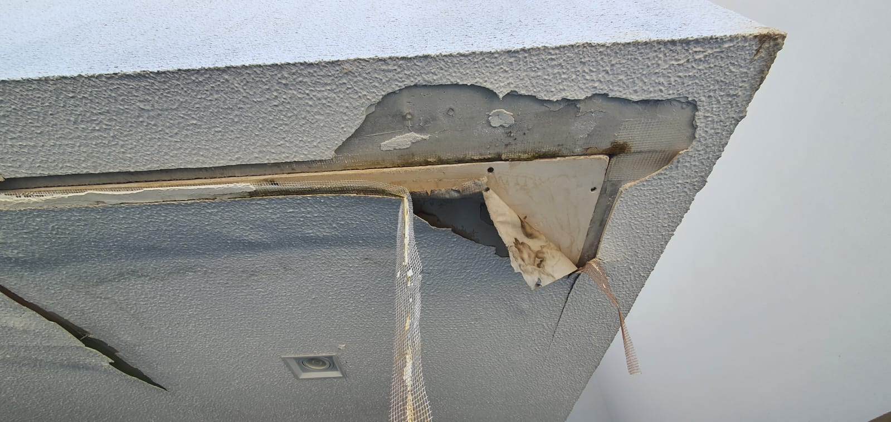
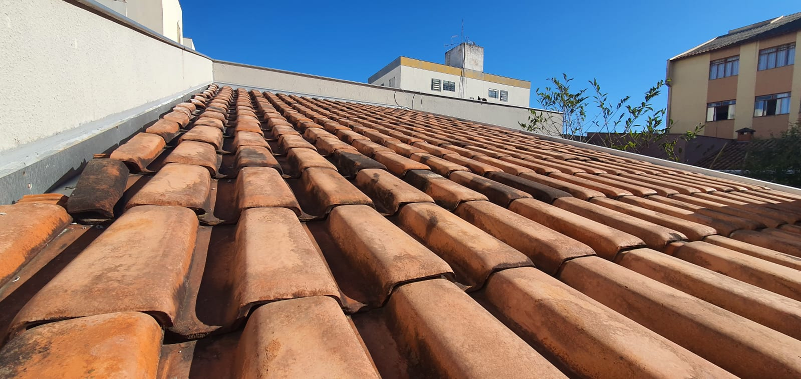
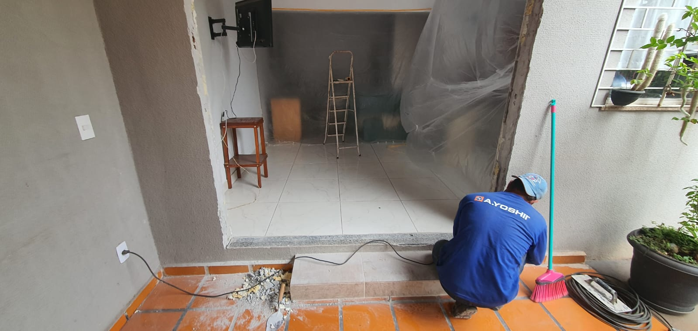
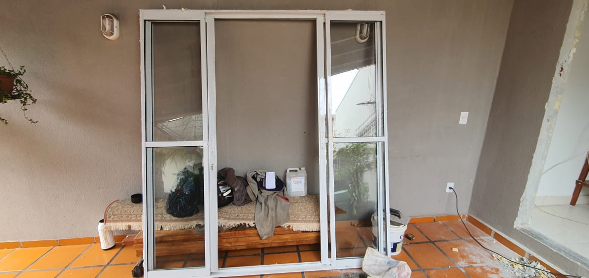

Administração de construções
Documentação, autorizações, acompanhamento diário, planejamento, orçamentos, compras, controle de prazos, materiais e equipes.
Obra organizada do planejamento ao acabamento
Construções, reformas e manutenções com acompanhamento de obra, execução técnica e atenção aos detalhes que aparecem no resultado final.
Cara de canteiro, organização de projeto
A LLBR cuida da obra como um processo: levantamento, compra de materiais, preparação, execução, limpeza e ajustes. O site começa mostrando justamente isso: fotos reais, notas do serviço e evolução de cada etapa.
Serviços
A lista veio do material original de divulgação e foi organizada para ficar simples de ler no site.
Documentação, autorizações, acompanhamento diário, planejamento, orçamentos, compras, controle de prazos, materiais e equipes.
Criação ou execução de projetos estruturais, arquitetônicos, elétricos e hidráulicos.
Paredes, pisos, banheiros, cozinhas, piscinas, muros, fundações, rampas, calçadas, telhados, fachadas e anexos.
Instalação completa, tomadas, interruptores, luminárias, LEDs, sensores, disjuntores, cabeamento, 127V/220V e preparação para ar-condicionado.
Água quente e fria, esgoto, pluvial, caixa d'água, bombas, hidrômetros, torneiras, duchas, chuveiros, válvulas e filtros.
Pintura, decks, drywall, gesso, vidros, marmoraria, papel de parede, pisos, revestimentos, soleiras e rejuntes.
Calhas, rufos, telhados, impermeabilização, serralheria, corrimões, portões, guarda-corpos e estruturas metálicas.
Ar-condicionado, placas solares, limpeza de caixa d'água, internet, roçagem, terraplanagem, descarte, fretes e carretos.
Diário de obra
Cada foto recebeu uma nota curta para explicar o que está acontecendo na etapa, como se fosse um registro técnico de obra.

Regularização da área, conferência de passagem e preparação para receber a próxima camada.

Adequação de pontos elétricos com tubulação firme e acesso para manutenção.

Conferência de telhas, encontro com paredes e pontos de captação de água.

Alvenaria com conduítes posicionados antes do fechamento e acabamento.

Etapa de acabamento com cuidado em paginação, pontos de uso e limpeza final.
Antes e depois
A ideia aqui é mostrar a transformação: do ponto bruto ao avanço da execução. Conforme vocês separarem mais fotos do mesmo ambiente, esta seção pode virar um portfólio completo.


Levantamento da parede, alinhamento e aplicação de reboco para preparar o ambiente para acabamento.


Organização de circuitos, disjuntores e cabeamento para deixar a instalação mais segura e fácil de identificar.


Correção de pontos críticos, revisão de encaixes e cuidado com impermeabilização.


Acabamento de abertura, ajuste de acesso e instalação de fechamento em vidro.
Processo
Entendimento da demanda, documentação, autorizações, escopo e prioridades.
Orçamento, materiais, prazos, terceiros, máquinas, caçambas e fluxo de trabalho.
Acompanhamento diário, controle das etapas e adequações durante a obra.
Lista completa
Uma visão rápida para quem quer saber se o serviço desejado entra no escopo da LLBR.
Criador do site
O desenvolvimento deste site está vinculado ao GitHub do Lucas. Para dúvidas, bugs e erros, use o repositório do projeto.